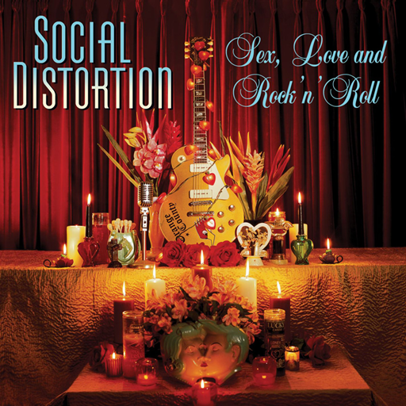

The title and logo of this project is subject to change.
Sort by Title
Sort by Artist
Sort by Year
Needles and Pins
Ramones
Punk
Album: Road to Ruin
Year: 1978
▶ Play Preview
Poison Whiskey
Lynyrd Skynyrd
Southern Rock
Album: (pronounced 'leh-'nérd 'skin-'nérd)
Year: 1973
▶ Play Preview

Reach for the Sky
Social Distortion
Punk
Album: Sex, Love and Rock 'n' Roll
Year: 2004
▶ Play Preview
Shattered Dreams
Johnny Hates Jazz
New Wave
Album: Turn Back the Clock
Year: 1988
▶ Play Preview
Prisoner of Love
Tiny Tim
Other
Album: Tip Toe Through the Tulips
Year: 1986
▶ Play Preview